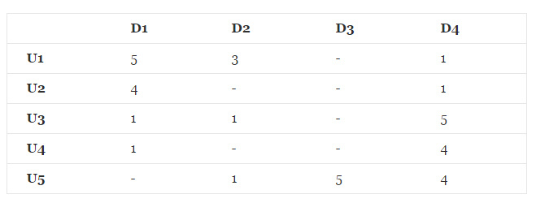

一、推荐算法概述
对于推荐系统(Recommend System，RS), 从广义上的理解为：为用户(User)推荐相关的商品(Items)。
常用的推荐算法主要有:
基于内容的推荐(Content-Based Recommendation)
协同过滤的推荐(Collaborative Filtering Recommendation)
基于关联规则的推荐(Association Rule-Based Recommendation)
基于效用的推荐(Utility-Based Recommendation)
基于知识的推荐(Knowledge-Based Recommendation)
组合的推荐(Hybrid Recommendation)
在推荐系统中，最重要的数据是用户对商品的打分数据，数据形式如下所示：

二、基于矩阵分解的推荐算法
2.1、矩阵分解的一般形式
2.2、利用矩阵分解进行预测
2.2.1、损失函数
2.2.2、损失函数的求解
2.2.3、加入正则项的损失函数即求解方法
2.2.4、预测
2.3、程序实现
对于上述的评分矩阵，通过矩阵分解的方法对其未打分项进行预测，最终的结果为:
程序代码如下:
其中，利用梯度下降法进行矩阵分解的过程中的收敛曲线如下所示:
参考文献:
《大数据智能》